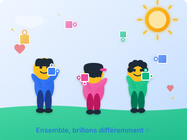

Sur les réseaux & dans la presse
Articles, posts et publications autour de la Journée Mondiale de l'Autisme au Sénégal.
LinkedIn Najee Classroom · 2 avr. 2026
Publication — sensibilisation à l'autisme
Retour en images, réactions et engagement autour de la Journée Mondiale de l'Autisme au Sénégal.
linkedin.com
Facebook Plateforme Autisme Sénégal · 2 avr.
Mobilisation des familles et partenaires
Photos, messages clés et mobilisation des familles, associations et partenaires institutionnels.
facebook.com
Facebook Vidéo · 2 avr. 2026
Temps forts de la journée
Extraits vidéo des moments marquants : échanges, interventions et sensibilisation sur le terrain.
facebook.com
Facebook Communauté · 2 avr.
Partage communauté — inclusion réelle
Relais des messages pour une société plus inclusive et un meilleur accompagnement des enfants autistes.
facebook.com
Jotaayu Sénégal · 2 avr. 2026
Compte-rendu de la journée du 2 avril
Article et informations sur l'événement de sensibilisation à l'autisme organisé à Dakar.
jotaayusenegal.com
Dakaractu · 2 avr. 2026
Aïssatou Diallo Camara plaide pour une société plus inclusive
« L'autisme n'est pas une fatalité, mais une différence qui mérite respect et inclusion. »
dakaractu.com
Seneweb · Société
Le témoignage d'Aïssatou Diallo Camara, mère de deux enfants autistes
Appel à une coordination nationale pour que l'autisme ne soit plus un combat solitaire pour les familles.
seneweb.com
YouTube · Plateforme Autisme
Vidéo — Journée Mondiale de l'Autisme
Vidéo de couverture et témoignages autour de la sensibilisation à l'autisme au Sénégal.
youtube.com